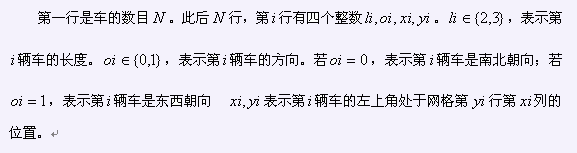

BZPRO
#1368. [Baltic2004]CAR PARK
内存限制：64 MiB
时间限制：10 Sec
提交
提交记录
讨论
题目描述
在一个6×6的正方形网格中停靠着若干辆车。其中的一号车是学校的班车，长度为2，宽度为1。其它车的宽度为1，长度为2或3。每辆车的朝向是南北向或东西向。我们可以使某辆车沿着它的朝向移动一步，前提是没有开出网格或者有别的车阻拦。我们的目的是使一号车从网格的第三行六列右侧的出口离开，在这基础上还要使所有车移动的步数之和最小。车的数目小于等于16。
输入格式

输出格式
仅含一个整数，表示把班车开出网格需要的最小步数。如果无解就输出-1
样例
样例输入
8
2 1 2 3
2 1 1 1
2 0 1 5
2 1 5 5
3 0 6 1
3 0 1 2
3 0 4 2
3 1 3 6
样例输出
18
数据范围与提示